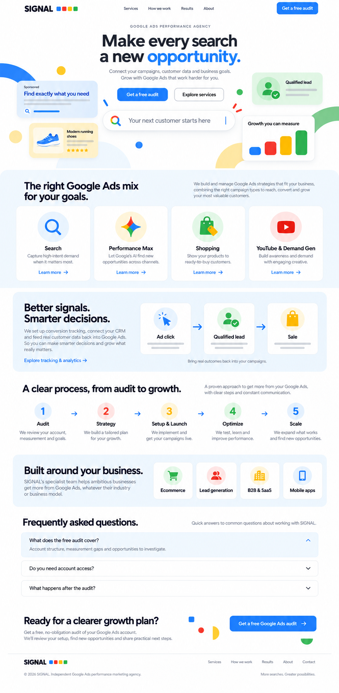

Оберіть сторінку та пристрій. Мобільні A і B — послідовні частини однієї сторінки.
Відкрити зображення окремо
Розміри режимів логічні; роздільна здатність PNG може відрізнятися. Точні вимоги — у MD.
